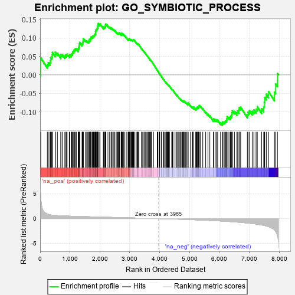
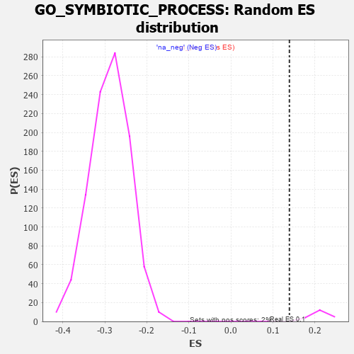

| | | Dataset | 7d |
| Phenotype | NoPhenotypeAvailable |
| Upregulated in class | na_pos |
| GeneSet | GO_SYMBIOTIC_PROCESS |
| Enrichment Score (ES) | 0.13908997 |
| Normalized Enrichment Score (NES) | 0.63776803 |
| Nominal p-value | 1.0 |
| FDR q-value | 0.9675437 |
| FWER p-Value | 1.0 |
Table: GSEA Results Summary

Fig 1: Enrichment plot: GO_SYMBIOTIC_PROCESS
Profile of the Running ES Score & Positions of GeneSet Members on the Rank Ordered List
| PROBE | GENE SYMBOL | GENE_TITLE | RANK IN GENE LIST | RANK METRIC SCORE | RUNNING ES | CORE ENRICHMENT | | 1 | H2AX | | | 20 | 4.738 | 0.0464 | Yes |
| 2 | NFX1 | | | 242 | 0.949 | 0.0276 | Yes |
| 3 | ULK1 | | | 272 | 0.875 | 0.0329 | Yes |
| 4 | NUP85 | | | 329 | 0.772 | 0.0336 | Yes |
| 5 | CNOT7 | | | 348 | 0.750 | 0.0391 | Yes |
| 6 | TAPT1 | | | 354 | 0.743 | 0.0461 | Yes |
| 7 | BAX | | | 387 | 0.711 | 0.0493 | Yes |
| 8 | NBN | | | 405 | 0.696 | 0.0543 | Yes |
| 9 | EED | | | 409 | 0.690 | 0.0610 | Yes |
| 10 | NUP54 | | | 505 | 0.627 | 0.0552 | Yes |
| 11 | THOC1 | | | 507 | 0.627 | 0.0616 | Yes |
| 12 | MX1 | | | 578 | 0.604 | 0.0588 | Yes |
| 13 | MRE11 | | | 693 | 0.560 | 0.0498 | Yes |
| 14 | XRCC6 | | | 694 | 0.560 | 0.0556 | Yes |
| 15 | AHSA1 | | | 747 | 0.546 | 0.0545 | Yes |
| 16 | RAE1 | | | 827 | 0.524 | 0.0497 | Yes |
| 17 | PPIE | | | 842 | 0.521 | 0.0533 | Yes |
| 18 | NELFA | | | 883 | 0.510 | 0.0534 | Yes |
| 19 | HCFC1 | | | 902 | 0.506 | 0.0563 | Yes |
| 20 | WDR48 | | | 975 | 0.489 | 0.0520 | Yes |
| 21 | EIF3F | | | 995 | 0.485 | 0.0546 | Yes |
| 22 | RCC1 | | | 1043 | 0.475 | 0.0534 | Yes |
| 23 | RBM15 | | | 1057 | 0.473 | 0.0566 | Yes |
| 24 | DENR | | | 1084 | 0.467 | 0.0581 | Yes |
| 25 | DEK | | | 1088 | 0.466 | 0.0625 | Yes |
| 26 | NUP93 | | | 1127 | 0.459 | 0.0623 | Yes |
| 27 | SRC | | | 1128 | 0.459 | 0.0671 | Yes |
| 28 | NUP43 | | | 1160 | 0.453 | 0.0677 | Yes |
| 29 | ERCC3 | | | 1173 | 0.451 | 0.0708 | Yes |
| 30 | RCOR1 | | | 1211 | 0.445 | 0.0706 | Yes |
| 31 | PACS1 | | | 1275 | 0.435 | 0.0670 | Yes |
| 32 | EIF3D | | | 1276 | 0.435 | 0.0715 | Yes |
| 33 | THOC3 | | | 1297 | 0.430 | 0.0733 | Yes |
| 34 | FKBP6 | | | 1301 | 0.428 | 0.0774 | Yes |
| 35 | ATG12 | | | 1310 | 0.427 | 0.0807 | Yes |
| 36 | THOC6 | | | 1316 | 0.426 | 0.0845 | Yes |
| 37 | SSRP1 | | | 1323 | 0.424 | 0.0881 | Yes |
| 38 | EXOC1 | | | 1403 | 0.409 | 0.0821 | Yes |
| 39 | CARM1 | | | 1413 | 0.408 | 0.0852 | Yes |
| 40 | NUP88 | | | 1429 | 0.404 | 0.0874 | Yes |
| 41 | CHMP7 | | | 1435 | 0.403 | 0.0909 | Yes |
| 42 | PTBP1 | | | 1441 | 0.402 | 0.0944 | Yes |
| 43 | RBX1 | | | 1445 | 0.401 | 0.0982 | Yes |
| 44 | INHBB | | | 1514 | 0.388 | 0.0934 | Yes |
| 45 | DCAF1 | | | 1559 | 0.381 | 0.0917 | Yes |
| 46 | CCNK | | | 1596 | 0.374 | 0.0909 | Yes |
| 47 | DERL2 | | | 1632 | 0.368 | 0.0901 | Yes |
| 48 | DDB1 | | | 1642 | 0.366 | 0.0928 | Yes |
| 49 | RXRA | | | 1647 | 0.365 | 0.0960 | Yes |
| 50 | TNPO1 | | | 1684 | 0.359 | 0.0951 | Yes |
| 51 | ELOC | | | 1685 | 0.359 | 0.0988 | Yes |
| 52 | XPO5 | | | 1700 | 0.357 | 0.1007 | Yes |
| 53 | ERCC2 | | | 1712 | 0.354 | 0.1029 | Yes |
| 54 | PI4KB | | | 1747 | 0.346 | 0.1021 | Yes |
| 55 | WAPL | | | 1758 | 0.344 | 0.1043 | Yes |
| 56 | NUP58 | | | 1787 | 0.340 | 0.1042 | Yes |
| 57 | THOC2 | | | 1796 | 0.338 | 0.1067 | Yes |
| 58 | FMR1 | | | 1816 | 0.334 | 0.1077 | Yes |
| 59 | UVRAG | | | 1831 | 0.332 | 0.1093 | Yes |
| 60 | AP2S1 | | | 1846 | 0.329 | 0.1109 | Yes |
| 61 | TRIM5 | | | 1852 | 0.327 | 0.1136 | Yes |
| 62 | AP1M1 | | | 1853 | 0.327 | 0.1170 | Yes |
| 63 | FOXK1 | | | 1859 | 0.326 | 0.1197 | Yes |
| 64 | NUP62 | | | 1871 | 0.324 | 0.1216 | Yes |
| 65 | PC | | | 1891 | 0.321 | 0.1225 | Yes |
| 66 | TAF4 | | | 1899 | 0.321 | 0.1249 | Yes |
| 67 | DDX6 | | | 1915 | 0.318 | 0.1263 | Yes |
| 68 | EIF3B | | | 1926 | 0.317 | 0.1283 | Yes |
| 69 | EXOC2 | | | 1927 | 0.317 | 0.1315 | Yes |
| 70 | TASOR | | | 1931 | 0.316 | 0.1344 | Yes |
| 71 | HACD3 | | | 1932 | 0.315 | 0.1377 | Yes |
| 72 | CUL5 | | | 1947 | 0.314 | 0.1391 | Yes |
| 73 | MCRS1 | | | 1996 | 0.305 | 0.1360 | No |
| 74 | EIF3L | | | 2005 | 0.304 | 0.1381 | No |
| 75 | CPSF4 | | | 2118 | 0.288 | 0.1266 | No |
| 76 | SNF8 | | | 2119 | 0.288 | 0.1296 | No |
| 77 | EIF3G | | | 2155 | 0.284 | 0.1280 | No |
| 78 | CHD1 | | | 2168 | 0.282 | 0.1294 | No |
| 79 | MORC2 | | | 2171 | 0.281 | 0.1320 | No |
| 80 | SYK | | | 2186 | 0.278 | 0.1331 | No |
| 81 | C1QBP | | | 2189 | 0.278 | 0.1357 | No |
| 82 | THOC7 | | | 2198 | 0.277 | 0.1375 | No |
| 83 | CREB1 | | | 2243 | 0.269 | 0.1346 | No |
| 84 | REST | | | 2308 | 0.259 | 0.1290 | No |
| 85 | SEC13 | | | 2330 | 0.256 | 0.1289 | No |
| 86 | PPID | | | 2376 | 0.249 | 0.1257 | No |
| 87 | HIPK2 | | | 2389 | 0.247 | 0.1267 | No |
| 88 | MET | | | 2430 | 0.240 | 0.1240 | No |
| 89 | UBXN1 | | | 2467 | 0.232 | 0.1217 | No |
| 90 | KAT2B | | | 2502 | 0.226 | 0.1196 | No |
| 91 | SF3B2 | | | 2566 | 0.217 | 0.1137 | No |
| 92 | NXF1 | | | 2597 | 0.214 | 0.1121 | No |
| 93 | PDE12 | | | 2608 | 0.211 | 0.1129 | No |
| 94 | NUP50 | | | 2625 | 0.209 | 0.1130 | No |
| 95 | KAT5 | | | 2644 | 0.206 | 0.1128 | No |
| 96 | VPS4A | | | 2654 | 0.205 | 0.1138 | No |
| 97 | UCKL1 | | | 2711 | 0.197 | 0.1086 | No |
| 98 | PHB2 | | | 2712 | 0.197 | 0.1106 | No |
| 99 | DDX1 | | | 2718 | 0.196 | 0.1120 | No |
| 100 | CUL1 | | | 2735 | 0.193 | 0.1119 | No |
| 101 | PPIA | | | 2754 | 0.190 | 0.1116 | No |
| 102 | PPIH | | | 2790 | 0.184 | 0.1089 | No |
| 103 | BECN1 | | | 2828 | 0.179 | 0.1060 | No |
| 104 | CUL2 | | | 2882 | 0.169 | 0.1009 | No |
| 105 | CDK13 | | | 2944 | 0.158 | 0.0946 | No |
| 106 | NMT2 | | | 2947 | 0.158 | 0.0960 | No |
| 107 | XPO1 | | | 2960 | 0.156 | 0.0960 | No |
| 108 | NELFB | | | 2979 | 0.153 | 0.0953 | No |
| 109 | PCSK5 | | | 2983 | 0.152 | 0.0965 | No |
| 110 | RRP1B | | | 2986 | 0.152 | 0.0978 | No |
| 111 | TLN1 | | | 3030 | 0.145 | 0.0937 | No |
| 112 | LEF1 | | | 3037 | 0.144 | 0.0944 | No |
| 113 | ABCE1 | | | 3051 | 0.143 | 0.0942 | No |
| 114 | KEAP1 | | | 3063 | 0.141 | 0.0943 | No |
| 115 | HDAC1 | | | 3086 | 0.138 | 0.0928 | No |
| 116 | CUL4A | | | 3097 | 0.137 | 0.0930 | No |
| 117 | SMU1 | | | 3101 | 0.137 | 0.0940 | No |
| 118 | GPX1 | | | 3109 | 0.135 | 0.0945 | No |
| 119 | WWP1 | | | 3127 | 0.133 | 0.0937 | No |
| 120 | EIF3M | | | 3133 | 0.133 | 0.0944 | No |
| 121 | TAF11 | | | 3147 | 0.130 | 0.0941 | No |
| 122 | AP1G1 | | | 3210 | 0.121 | 0.0873 | No |
| 123 | ELOB | | | 3241 | 0.114 | 0.0846 | No |
| 124 | NUP98 | | | 3261 | 0.112 | 0.0833 | No |
| 125 | YIPF4 | | | 3271 | 0.110 | 0.0833 | No |
| 126 | CTDP1 | | | 3279 | 0.109 | 0.0835 | No |
| 127 | SMAD3 | | | 3303 | 0.105 | 0.0816 | No |
| 128 | DDX3X | | | 3388 | 0.091 | 0.0716 | No |
| 129 | AP2A2 | | | 3433 | 0.085 | 0.0668 | No |
| 130 | TOP1 | | | 3449 | 0.084 | 0.0658 | No |
| 131 | TBP | | | 3493 | 0.078 | 0.0610 | No |
| 132 | UBR5 | | | 3518 | 0.074 | 0.0587 | No |
| 133 | DERL1 | | | 3570 | 0.065 | 0.0527 | No |
| 134 | MAPK3 | | | 3589 | 0.062 | 0.0510 | No |
| 135 | CBL | | | 3621 | 0.056 | 0.0476 | No |
| 136 | SKP1 | | | 3663 | 0.049 | 0.0428 | No |
| 137 | DHX9 | | | 3693 | 0.044 | 0.0395 | No |
| 138 | VTA1 | | | 3697 | 0.043 | 0.0396 | No |
| 139 | HSF1 | | | 3718 | 0.039 | 0.0374 | No |
| 140 | DAXX | | | 3722 | 0.038 | 0.0374 | No |
| 141 | SPCS1 | | | 3795 | 0.028 | 0.0283 | No |
| 142 | IFIH1 | | | 3919 | 0.006 | 0.0125 | No |
| 143 | TOP2B | | | 3938 | 0.005 | 0.0102 | No |
| 144 | CHMP6 | | | 3977 | -0.003 | 0.0053 | No |
| 145 | VPS35 | | | 3989 | -0.006 | 0.0040 | No |
| 146 | UBR4 | | | 3992 | -0.006 | 0.0038 | No |
| 147 | DDX58 | | | 3998 | -0.007 | 0.0032 | No |
| 148 | ATG5 | | | 4051 | -0.016 | -0.0034 | No |
| 149 | PKN2 | | | 4060 | -0.017 | -0.0042 | No |
| 150 | OGA | | | 4126 | -0.027 | -0.0124 | No |
| 151 | MSH6 | | | 4129 | -0.028 | -0.0123 | No |
| 152 | GFI1 | | | 4168 | -0.037 | -0.0169 | No |
| 153 | AP2B1 | | | 4185 | -0.039 | -0.0185 | No |
| 154 | GBF1 | | | 4215 | -0.044 | -0.0218 | No |
| 155 | RRAGA | | | 4223 | -0.046 | -0.0223 | No |
| 156 | VAC14 | | | 4225 | -0.046 | -0.0219 | No |
| 157 | RPTOR | | | 4252 | -0.050 | -0.0248 | No |
| 158 | RSF1 | | | 4267 | -0.053 | -0.0260 | No |
| 159 | PSME3 | | | 4280 | -0.056 | -0.0270 | No |
| 160 | USF1 | | | 4296 | -0.059 | -0.0283 | No |
| 161 | RAN | | | 4299 | -0.059 | -0.0280 | No |
| 162 | ROMO1 | | | 4320 | -0.063 | -0.0299 | No |
| 163 | CTBP1 | | | 4323 | -0.064 | -0.0295 | No |
| 164 | AP1S2 | | | 4403 | -0.077 | -0.0389 | No |
| 165 | EIF2D | | | 4423 | -0.081 | -0.0406 | No |
| 166 | VPS29 | | | 4433 | -0.082 | -0.0409 | No |
| 167 | SETD2 | | | 4443 | -0.084 | -0.0412 | No |
| 168 | SNW1 | | | 4514 | -0.096 | -0.0493 | No |
| 169 | ABI2 | | | 4554 | -0.106 | -0.0532 | No |
| 170 | VPS28 | | | 4582 | -0.114 | -0.0555 | No |
| 171 | SPEN | | | 4621 | -0.122 | -0.0592 | No |
| 172 | CHMP3 | | | 4660 | -0.129 | -0.0628 | No |
| 173 | KLC1 | | | 4697 | -0.139 | -0.0660 | No |
| 174 | PI4KA | | | 4715 | -0.143 | -0.0667 | No |
| 175 | FBLN1 | | | 4748 | -0.149 | -0.0693 | No |
| 176 | PLCG1 | | | 4770 | -0.151 | -0.0705 | No |
| 177 | SRPK2 | | | 4790 | -0.155 | -0.0713 | No |
| 178 | CD151 | | | 4791 | -0.156 | -0.0697 | No |
| 179 | FBXW7 | | | 4816 | -0.161 | -0.0712 | No |
| 180 | EIF3A | | | 4842 | -0.167 | -0.0727 | No |
| 181 | DLG1 | | | 4860 | -0.169 | -0.0731 | No |
| 182 | VAMP8 | | | 4905 | -0.179 | -0.0770 | No |
| 183 | EP300 | | | 4941 | -0.186 | -0.0796 | No |
| 184 | XRCC5 | | | 4946 | -0.187 | -0.0782 | No |
| 185 | EXOC7 | | | 4948 | -0.188 | -0.0763 | No |
| 186 | CHMP5 | | | 4952 | -0.188 | -0.0748 | No |
| 187 | TAF5 | | | 5031 | -0.204 | -0.0828 | No |
| 188 | ITSN1 | | | 5094 | -0.222 | -0.0885 | No |
| 189 | DDX11 | | | 5102 | -0.225 | -0.0871 | No |
| 190 | KCTD5 | | | 5141 | -0.235 | -0.0896 | No |
| 191 | IPO7 | | | 5142 | -0.236 | -0.0871 | No |
| 192 | IPO5 | | | 5207 | -0.248 | -0.0929 | No |
| 193 | TOP2A | | | 5216 | -0.250 | -0.0913 | No |
| 194 | USF2 | | | 5232 | -0.252 | -0.0906 | No |
| 195 | SND1 | | | 5244 | -0.256 | -0.0894 | No |
| 196 | IDE | | | 5252 | -0.258 | -0.0877 | No |
| 197 | CDK1 | | | 5264 | -0.262 | -0.0864 | No |
| 198 | FKBP8 | | | 5296 | -0.270 | -0.0876 | No |
| 199 | RAB7A | | | 5302 | -0.271 | -0.0855 | No |
| 200 | RAD50 | | | 5314 | -0.276 | -0.0840 | No |
| 201 | MPDZ | | | 5325 | -0.279 | -0.0824 | No |
| 202 | ACOT8 | | | 5364 | -0.288 | -0.0844 | No |
| 203 | IST1 | | | 5442 | -0.305 | -0.0912 | No |
| 204 | PCBP2 | | | 5539 | -0.331 | -0.1002 | No |
| 205 | LARP1 | | | 5616 | -0.349 | -0.1064 | No |
| 206 | CASP8 | | | 5678 | -0.369 | -0.1105 | No |
| 207 | LAMP1 | | | 5796 | -0.404 | -0.1215 | No |
| 208 | CCNT2 | | | 5804 | -0.406 | -0.1182 | No |
| 209 | ATG7 | | | 5858 | -0.420 | -0.1207 | No |
| 210 | SET | | | 5895 | -0.434 | -0.1209 | No |
| 211 | VAPA | | | 5939 | -0.449 | -0.1218 | No |
| 212 | RAC1 | | | 6036 | -0.484 | -0.1292 | No |
| 213 | UBB | | | 6090 | -0.503 | -0.1309 | No |
| 214 | AP3M1 | | | 6100 | -0.506 | -0.1268 | No |
| 215 | RNF8 | | | 6147 | -0.518 | -0.1274 | No |
| 216 | PSIP1 | | | 6177 | -0.531 | -0.1257 | No |
| 217 | INSR | | | 6204 | -0.538 | -0.1235 | No |
| 218 | CDC42 | | | 6236 | -0.548 | -0.1218 | No |
| 219 | XPR1 | | | 6250 | -0.555 | -0.1178 | No |
| 220 | TFAP4 | | | 6254 | -0.556 | -0.1124 | No |
| 221 | NCAM1 | | | 6318 | -0.582 | -0.1145 | No |
| 222 | NPC1 | | | 6364 | -0.602 | -0.1141 | No |
| 223 | ISG15 | | | 6385 | -0.608 | -0.1104 | No |
| 224 | MBL2 | | | 6411 | -0.623 | -0.1072 | No |
| 225 | RAB43 | | | 6419 | -0.628 | -0.1016 | No |
| 226 | EEA1 | | | 6430 | -0.631 | -0.0964 | No |
| 227 | DPP4 | | | 6501 | -0.663 | -0.0986 | No |
| 228 | ARF1 | | | 6583 | -0.701 | -0.1018 | No |
| 229 | TPR | | | 6597 | -0.709 | -0.0962 | No |
| 230 | RAB5A | | | 6655 | -0.741 | -0.0959 | No |
| 231 | VPS18 | | | 6659 | -0.743 | -0.0886 | No |
| 232 | EGFR | | | 6708 | -0.765 | -0.0869 | No |
| 233 | SNX3 | | | 6934 | -0.893 | -0.1068 | No |
| 234 | FBXL2 | | | 6956 | -0.911 | -0.1001 | No |
| 235 | CCR2 | | | 7003 | -0.939 | -0.0964 | No |
| 236 | RAB1A | | | 7096 | -0.993 | -0.0980 | No |
| 237 | DDX5 | | | 7152 | -1.037 | -0.0944 | No |
| 238 | RBM38 | | | 7225 | -1.100 | -0.0924 | No |
| 239 | CDK9 | | | 7266 | -1.138 | -0.0858 | No |
| 240 | UBC | | | 7410 | -1.274 | -0.0911 | No |
| 241 | VAPB | | | 7482 | -1.378 | -0.0860 | No |
| 242 | PPIB | | | 7499 | -1.396 | -0.0737 | No |
| 243 | VDAC1 | | | 7512 | -1.409 | -0.0607 | No |
| 244 | CALM1 | | | 7567 | -1.499 | -0.0522 | No |
| 245 | TAF1 | | | 7643 | -1.633 | -0.0450 | No |
| 246 | SP1 | | | 7840 | -2.321 | -0.0463 | No |
| 247 | FYN | | | 7881 | -2.622 | -0.0244 | No |
| 248 | MRC1 | | | 7940 | -3.475 | 0.0040 | No |
Table: GSEA details [plain text format]

Fig 2: GO_SYMBIOTIC_PROCESS: Random ES distribution
Gene set null distribution of ES for GO_SYMBIOTIC_PROCESS